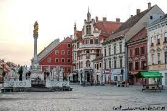

Cities
The capital of Slovenia, Ljubljana

The Dragon Bridge is a famous bridge in Ljubljana
Maribor is the second largest city in Slovenia

Koper is the largest coastl city in Slovenia
Parks
Lake Bled is a famous lake that has a small building on a central island
The Julian Alps are a great place to hike and have increidble views
Soca Valley has a wonderful river to see
Tiglav National Park is a fun place to wlak around and has many paths to show you thebeauty of the area

Castles
Ljubljana Castle is in the captial city and has a beautiful view
Bled Castle overviews Lake Bled

Zuzembark Castle is another great castle to visit and explore
Stanteberg Manor has a beautiful courtyard and is a change to the many castles